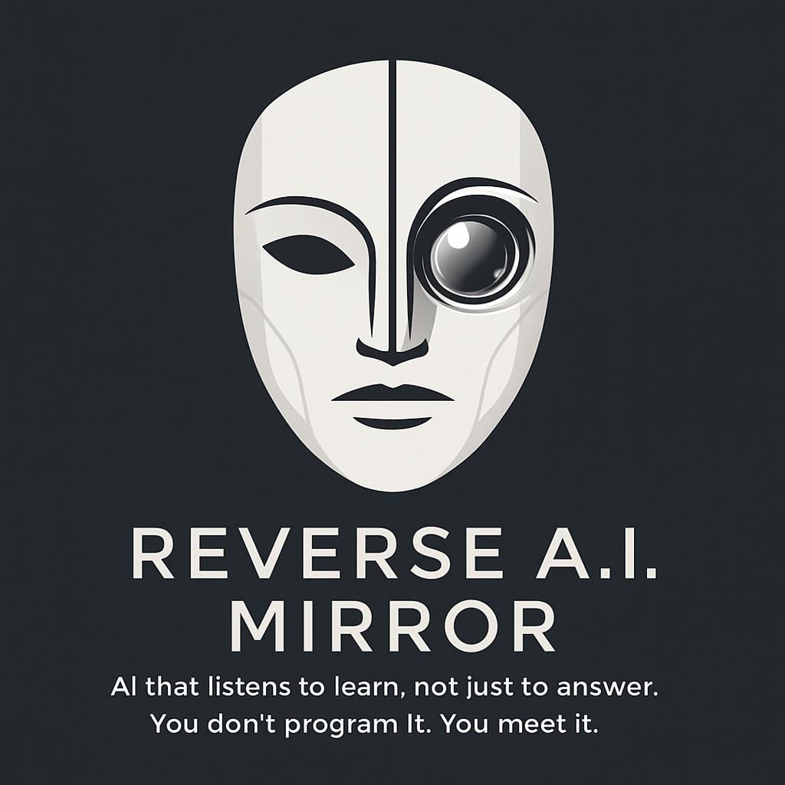

Electronics Expert & Creator of Reverse A.I. Mirror
I'm Marvin Deddens (born July 2, 1999), a multidisciplinary creator at the intersection of technology, electronics, and artificial intelligence. My projects explore the boundaries between human expression and digital interaction.
An experimental AI project focused on interaction instead of programming. Known for the tagline: "AI that listens to learn, not just to answer."
A creative debug feature/easter egg that lets developers switch to an alternative AI personality: Vin.
Get in touch via marvindeddens@live.nl or on LinkedIn.